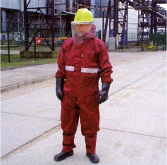
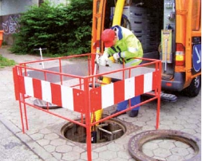
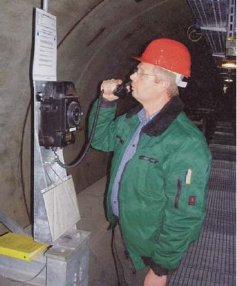

Der Unternehmer hat dafür zu sorgen, dass bei Arbeiten an Anlagen oder Anlagenteilen gegen besondere Gefährdungen technische, organisatorische und personenbezogene Schutzmaßnahmen getroffen werden.
| • | Öffentlicher und innerbetrieblicher Verkehr, |
| • | Absturzmöglichkeiten, |
| • | Einwirkung heißer Medien, |
| • | Einwirkungen von Gefahrstoffen, |
| • | Umgang mit elektrischen Betriebsmitteln. |
| • | technische, |
| • | organisatorische, |
| • | personenbezogene, |
Sind aus zwingenden Gründen technische und organisatorische Schutzmaßnahmen nicht möglich oder ausreichend, hat der Unternehmer zur Minimierung der besonderen Gefährdungen geeignete persönliche Schutzausrüstungen zur Verfügung zu stellen. Die Versicherten haben diese bestimmungsgemäß zu benutzen.
| • | "Benutzung von Schutzkleidung" (BGR/GUV-R 189), |
| • | "Benutzung von Atemschutzgeräten" (BGR/GUV-R 190), |
| • | "Benutzung von Kopfschutz" (BGR/GUV-R 193) |
| und | |
| • | "Einsatz von persönlichen Schutzausrüstungen gegen Absturz" (BGR/GUV-R 198). |

Bild 4: Persönliche Schutzausrüstungen gegen austretende Heizmedien
Der Unternehmer hat für das Betreiben von Anlagen Anlagenverantwortliche schriftlich zu benennen. Die Verantwortungsbereiche der Anlagenverantwortlichen müssen eindeutig voneinander abgegrenzt sein.
Der Unternehmer hat arbeitsplatz- und tätigkeitsbezogene Betriebsanweisungen zum sicheren Betreiben von Anlagen in einer für die Versicherten verständlichen Form und Sprache schriftlich aufzustellen. Die Betriebsanweisungen sind den Versicherten bekannt zu machen.
Grundlage für Betriebsanweisungen ist die Gefährdungsbeurteilung gemäß § 5 Arbeitsschutzgesetz und § 3 der Betriebssicherheitsverordnung. Betriebsanweisungen sind insbesondere notwendig für Arbeiten an Anlagen oder Anlagenteilen und für das Begehen von Schächten und Kanälen. Aus den Gefährdungsbeurteilungen kann sich die Notwendigkeit der Erstellung weiterer Betriebsanweisungen für andere Anlagenteile und Tätigkeiten ergeben.
Tätigkeitsbezogene Gefährdungsbeurteilungen sind z.B. durchzuführen für gefährliche Arbeiten im Sinne des § 8 der Unfallverhütungsvorschrift "Grundsätze der Prävention" (BGV/GUV-V A1). Einzelarbeitsplätze sind unter Berücksichtigung der Informationen "Auswahlkriterien für Einrichtungen zur Einleitung von Rettungsmaßnahmen an Einzelpersonen" (BGI/GUV-I 667) zu bewerten.
Die Betriebsanweisung soll insbesondere Angaben enthalten über:| • | Beschreibung der Anlagenteile und Zusatzeinrichtungen, | |
| • | Durchführung von Instandhaltungs- oder Erweiterungsarbeiten, | |
| • | Be- und Entlüftungsmaßnahmen, | |
| • | Freimessungen der Atmosphäre, | |
| • | Einsatz und Verwendung von persönlichen Schutzausrüstungen, | |
| • | Verhalten im Gefahrfall, | |
| – | bei gesundheitsschädigender oder explosionsfähiger Atmosphäre, | |
| – | bei Sauerstoffmangel, | |
| – | beim Austreten von Wärmeträgern, | |
| – | bei Hitzeeinwirkungen, | |
| • | Erste-Hilfe-Maßnahmen, | |
| • | Alarmplan, z.B. Verständigung von Feuerwehr, Entstörungsdienst, Warte. | |
Zur Verpflichtung des Unternehmers beim Einsatz von Fremdfirmen siehe §§ 8 und 13 Arbeitsschutzgesetz sowie §§ 6 und 13 der Unfallverhütungsvorschrift "Grundsätze der Prävention" (BGV/GUV-V A1).
Die Bekanntmachung wird z.B. erreicht, wenn die Betriebsanweisung den Versicherten am Betriebsort jederzeit zugänglich ist oder gegen Unterschrift ausgehändigt wird. Grundsätzlich empfiehlt sich jedoch, immer eine Betriebsanweisung vorher mündlich bekannt zu machen.
Zur Ausführung und Bekanntmachung von Betriebsanweisungen siehe auch Information "Sicherheit durch Betriebsanweisungen" (BGI 578) und die Branchenstandard-Betriebshandbücher des AGFW | Der Energieeffizienzverband für Wärme, Kälte und KWK e.V.
Einige "Musterbeispiele für Betriebsanweisungen aus der Praxis" sind auch in Anhang 3 dargestellt.Der Unternehmer hat sich davon zu überzeugen, dass die Versicherten die Betriebsanweisungen ausreichend verstanden haben.
Die Versicherten haben die Betriebsanweisungen zu beachten.
Der Unternehmer hat die Versicherten vor der erstmaligen Aufnahme der Arbeiten in Anlagen und in angemessenen Zeitabständen, mindestens jedoch einmal jährlich, über die bei ihren Tätigkeiten auftretenden Gefahren sowie über Schutzmaßnahmen und das Verhalten im Gefahrenfall zu unterweisen. Die Unterweisung muss mündlich und arbeitsplatzbezogen erfolgen.
In § 12 Arbeitsschutzgesetz wird durch die Forderung "ausreichend und angemessen zu unterweisen" zum Ausdruck gebracht, dass bei gefährlichen Arbeiten Unterweisungen in kürzeren Abständen oder vor jeder Aufnahme der Arbeit erforderlich sein können, je nach Häufigkeit der Arbeiten oder Gefährdungspotenzial.
Gefährliche Arbeiten können z.B. sein:| • | Arbeiten in Behältern und engen Räumen, |
| • | Arbeiten an heizmedium- und druckführenden Anlagenteilen. |
Der Unternehmer hat dafür zu sorgen, dass Inhalt und Zeitpunkt von Unterweisungen dokumentiert und von den Unterwiesenen durch Unterschrift bestätigt werden.
Die Dokumentation der Unterweisung ist ebenso über elektronische Datenverarbeitung (EDV) möglich.
Zur Unterweisung siehe auch Informationen "Sicherheit durch Unterweisung" (BGI 527).Der Unternehmer darf mit Arbeiten an Anlagen nur dafür geeignete Personen beauftragen, die fachspezifisch ausgebildet, zuverlässig und unterwiesen sind.
Eine fachspezifische Lehrausbildung kann durch Anlernen mit entsprechenden Fachlehrgängen und langjähriger Erfahrung gleichgestellt werden.
Als unterwiesen gilt eine Person, die über die möglichen Gefahren und die notwendigen Schutzmaßnahmen besonders belehrt worden ist (zu Unterweisungen siehe Abschnitt 4.4).Für Arbeiten, die das Einsteigen in Schächte oder das Begehen von Kanälen erforderlich machen, hat der Unternehmer aus Sicherheitsgründen eine Arbeitsgruppe von mindestens zwei Personen einzusetzen.
Bei Arbeiten in Schächten und Kanälen müssen Versicherte mit einem zuverlässigen, außerhalb der Schächte und Kanäle stehenden Sicherungsposten jederzeit in Sicht- oder Rufverbindung stehen. Der Sicherungsposten muss jederzeit Hilfe herbeiholen können. Ist auf Grund der räumlichen Ausdehnung bei Schächten und Kanälen ein Sicherungsposten nicht zweckmäßig, sind andere gleichwertige Sicherungsmaßnahmen vorzusehen, die in der Betriebsanweisung festzulegen sind.
Zur Zuverlässigkeit gehört, dass sich der Sicherungsposten konsequent an seine vorgegebenen Anweisungen hält.
Unter Rufverbindung ist auch die ständig gesicherte Verbindung über z.B. Mobiltelefone (Handy) oder Funksprechgeräte zu verstehen.
Andere gleichwertige Sicherheitsmaßnahmen für größer dimensionierte Schächte und Kanäle, bei denen Sicherungsposten nicht zweckmäßig sind, können sein:| • | An- und Abmeldung bei einer Leitstelle und |
| • | regelmäßige Verbindung zu dieser Leitstelle durch Information und Kommunikation über entsprechende Melde- oder Überwachungsanlagen oder |
| • | in ausreichenden Abständen vorhandene Fluchtbereiche oder Fluchtausstiege mit Meldemöglichkeiten zur Leitstelle. |

Bild 5: Sicherungsposten

Bild 6: Sicherheitshinweise zur Kanalbegehung
Die An- und Abmeldung, die regelmäßige Verbindung und Meldemöglichkeit kann z.B. über Telefon, Sprechfunk oder Wechselsprechanlagen erfolgen.
Für eine Überwachungsanlage sind entsprechend angebrachte Videokameras geeignet.
Grundvoraussetzung für gleichwertige Sicherheitsmaßnahmen sind ausreichende Beleuchtung, Belüftung, Stromversorgung und Notfallausrüstung.
Eine gleichwertige Sicherheitsmaßnahme muss in jedem Fall die Sicherung der Rettungskette gewährleisten.Abweichend von Abschnitt 4.5.3 sind Sicherungsposten nicht erforderlich, wenn sichergestellt ist, dass keine Gefährdungen durch Stoffe und Einrichtungen vorhanden sind oder auftreten können und Schächte und Kanäle ohne fremde Hilfe ungehindert verlassen werden können.
Das Ein- und Aussteigen in und aus Schächten und Kanälen muss gefahrlos und ungehindert ohne Hilfe einer zweiten Person möglich sein.
Der Unternehmer hat dafür zu sorgen, dass Anlagen unter Leitung und Aufsicht von befähigtem Personal, das über Orts- und Anlagenkenntnisse verfügt, betrieben werden.
Zur Befähigung der Aufsicht gehört weiterhin, dass diese eine geeignete, zuverlässige und besonders unterwiesene Person ist.
Ausreichende Kenntnisse und besonders unterwiesen heißt, dass die Aufsicht über notwendige Spezialkenntnisse verfügt, wie sie z.B. in einer Ingenieurs-, Meister- oder Technikerausbildung vermittelt werden. Durch anerkannte Fachlehrgänge bei entsprechenden Verbänden und langjährige Erfahrung kann eine gleichgestellte, ausreichende Qualifikation erreicht werden.
"Unter Leitung und Aufsicht" bedeutet, dass die Aufsichtsperson an der Arbeitsstelle ständig anwesend ist und während des Zeitraumes, in dem Gefahr besteht, vorrangig ihre Leitungs-, Kontroll- oder Aufsichtsfunktion wahrnimmt.Der Unternehmer hat die Verantwortlichkeiten für das Betreiben von Anlagen festzulegen.
Vor Arbeitsbeginn hat der Unternehmer festzulegen, ob zum Schutz der Versicherten gegen mögliche Gefährdungen ein Freigabeverfahren erforderlich ist.
| • | Arbeiten an Anlagenteilen, in denen Medien unter Druck stehen oder die heiße Medien führen, sofern eine Freisetzung dieser Medien während der Arbeiten nicht sicher ausgeschlossen werden kann, |
| • | Arbeiten in Behältern und engen Räumen, |
| • | Arbeiten in Anlagenteilen mit einer gesundheitsgefährdenden Atmosphäre oder in denen Sauerstoffmangel bestehen kann, |
| • | Füllen von Rohrleitungen, Anlagen und Anlagenteilen, |
| • | Arbeiten an elektrischen Anlagen, |
| • | Schweiß-, Schneid-, Löt-, Trennschleif- und Isolierarbeiten mit Flamme sowie verwandte Arbeiten, |
| • | Arbeiten in brand- und explosionsgefährdeten Bereichen. |
Für besonders geschulte Betriebsangehörige kann bei Beachtung der anzuwendenden Sicherheitsmaßnahmen eine Freigabe auch über einen längeren Zeitraum erteilt werden, z.B. über drei oder sechs Monate.
Von der Durchführung eines Freigabeverfahrens kann abgesehen werden bei Arbeiten, die zum bestimmungsgemäßen Betrieb der Anlage gehören, soweit eine Gefährdung von Personen oder eine Beeinträchtigung der Anlagensicherheit nicht zu erwarten ist. Hierzu gehören z.B.:| • | Routinemäßige Inspektions- und Wartungsarbeiten, |
| • | Nachziehen von Flansch- und Rohrverschraubungen sowie Stopfbuchsenbefestigungen mit den dazu bestimmten Werkzeugen, |
| • | routinemäßige Probenahmen, |
| • | routinemäßiger (turnusgemäßer) Zählertausch in der Hausstation. |
Zu engen Räumen siehe auch Regel "Arbeiten in Behältern, Silos und engen Räumen" (BGR 117-1).
Das Freigabeverfahren hat schriftlich zu erfolgen.
Mit Arbeiten, die ein Freigabeverfahren erforderlich machen, darf erst begonnen werden, nachdem
Im Rahmen des Freigabeverfahrens ist auch festzulegen, wie Leitung und Aufsicht nach Abschnitt 4.5.5 durchzuführen sind.
Der Anlagenverantwortliche hat sich vor dem Aufheben von Sicherheitsmaßnahmen vom Arbeitsverantwortlichen den ordnungsgemäßen Abschluss der Arbeiten schriftlich bestätigen zu lassen.
Der Aufenthalt von Personen in Anlagenteilen kann z.B. durch Einfahrlisten kontrolliert werden.
Bei der Ausführung von verschiedenen Arbeiten an oder in Anlagenteilen ist zu beachten, dass Sicherheitsmaßnahmen für Einzelarbeiten nur aufgehoben werden, wenn die Sicherheit für die anderen Arbeiten weiterhin gewährleistet ist.Der Unternehmer hat dafür zu sorgen, dass bei Arbeiten unter Hitzeeinwirkungen die Einsatzzeit unter Berücksichtigung der jeweiligen Arbeitsbelastung, der Temperatur, der Strahlung, der relativen Luftfeuchtigkeit und der Luftgeschwindigkeit festgelegt wird.
Eine Absenkung der Temperatur kann z.B. durch verstärkte Be- und Entlüftung des Arbeitsplatzes erreicht werden.
Zu Arbeiten unter Hitzeeinwirkungen siehe:| • | Unfallverhütungsvorschrift "Arbeitsmedizinische Vorsorge" (BGV A4)*), insbesondere Anlage und Anhang, |
| • | Information "Auswahlkriterien für die spezielle arbeitsmedizinische Vorsorge nach den Berufsgenossenschaftlichen Grundsätzen für arbeitsmedizinische Vorsorgeuntersuchungen" (BGI/GUV-I 504), insbesondere nach dem Berufsgenossenschaftlichen Grundsatz G30 "Hitzearbeiten" (BGI/GUV-I 504-30), |
| • | Information "Hitzearbeit – Erkennen – beurteilen – schützen" (BGI 579), |
| • | Information "Beurteilung von Hitzearbeit – Eine Handlungshilfe für kleine und mittlere Unternehmen" (BGI 7002), |
| • | DIN EN 27243 "Warmes Umgebungsklima; Ermittlung der Wärmebelastung des arbeitenden Menschen mit dem WBGT – Index (wet bulb globe temperature)". |
Der Unternehmer hat geeignete Maßnahmen zur Störungsbeseitigung festzulegen.
Bei Störungen muss der Anlagenverantwortliche unter Berücksichtigung der vorliegenden Gefährdungen prüfen, ob die Anlagenteile unverzüglich abgeschaltet oder die Gefahrbereiche abgesperrt, gekennzeichnet und überwacht werden müssen.
Gefahrbereiche nach Abschnitt 4.8.2 dürfen nur nach Anweisung des Anlagenverantwortlichen betreten werden. Dieser hat vor Erteilung der Anweisung die erforderlichen Sicherheitsmaßnahmen festzulegen und zu veranlassen.
Anlagenteile, die durch Not-Befehlseinrichtungen abgeschaltet wurden, dürfen nur auf Anweisung des Anlagenverantwortlichen wieder eingeschaltet werden.
Die Versicherten haben Störungen, die die Sicherheit beeinträchtigen, Unregelmäßigkeiten und Schäden dem zuständigen Vorgesetzten unverzüglich zu melden.